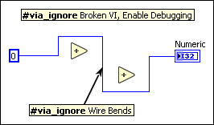

|
Note The VI Analyzer functionality this topic describes is available only if you install and activate the LabVIEW VI Analyzer Toolkit. Refer to the NI website for more information about the VI Analyzer Toolkit. |
You can ignore test failures for VIs and block diagram objects. When you ignore one or more tests for a particular object or a VI, the VI Analyzer will not return a failure for that object or VI for the specified test(s).
|
Note You cannot ignore failures for front panel objects or for VIs that do not have block diagrams, such as control VIs and global VIs. |
To ignore a failure for an entire VI, create a free label on the block diagram of the VI and add the hashtag #via_ignore [test] to create a bookmark. The VI Analyzer ignores results from the VI Analyzer test you specify in [test]. You can specify multiple test names in the free label to ignore multiple tests. To ignore a failure for a block diagram object, attach the free label with the #via_ignore bookmark to the object whose failure you want to ignore.
 |
Tip In the VI Analyzer Results Window, double-click the occurrence to open the VI where a test failed. In the VI, right-click on the object that failed and select Create�#via_ignore Bookmark. LabVIEW automatically creates a bookmark that contains the test name to ignore. |
In the following figure, the VI Analyzer ignores three test results.
The Broken VI and Enable Debugging tests will not return a failure for the entire VI. The Wire Bends test will not return a failure for the wire attached to the #via_ignore Wire Bends free label.
You can ignore results for the VI Analyzer tests that ship with LabVIEW. For custom VI Analyzer tests, you can ignore results for tests you create that return the UID property of objects that fail. You cannot ignore results for tests you create using the legacy test RD.vi.